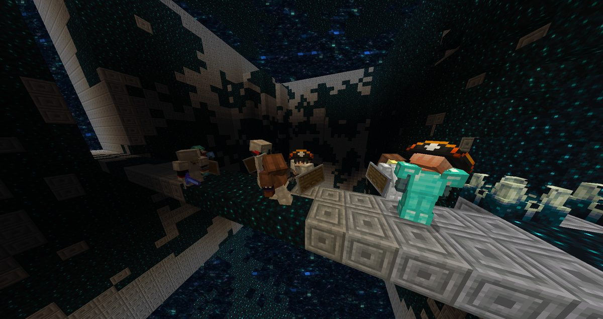
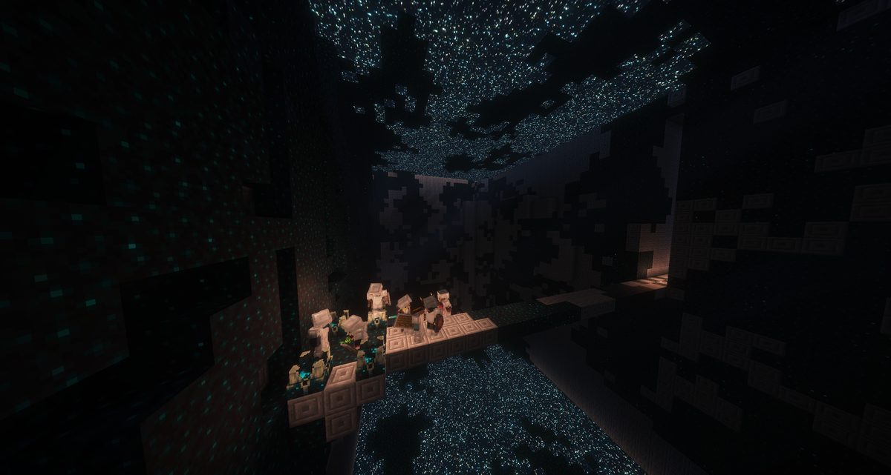
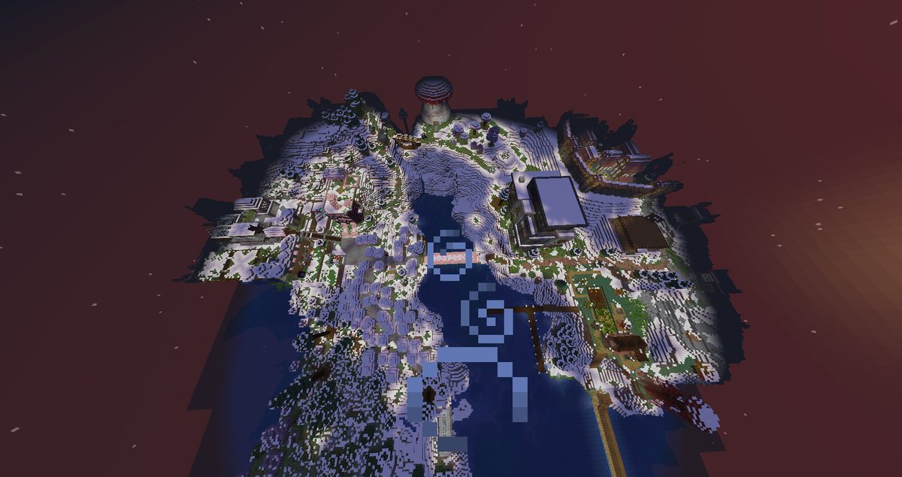
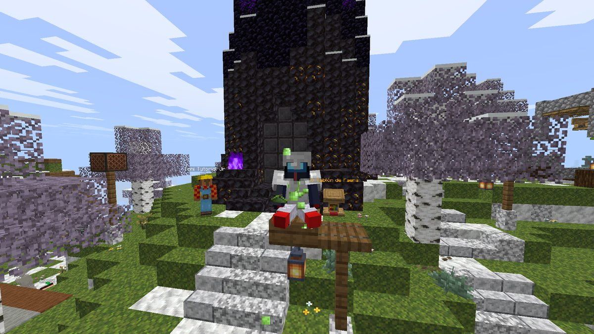
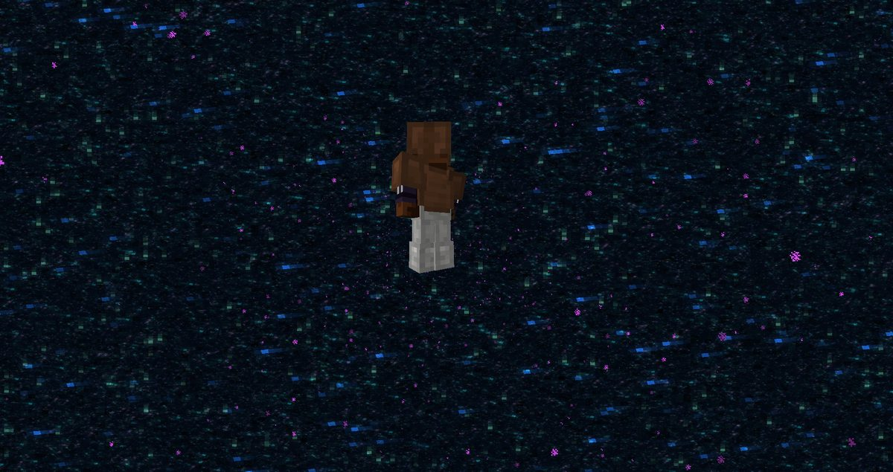
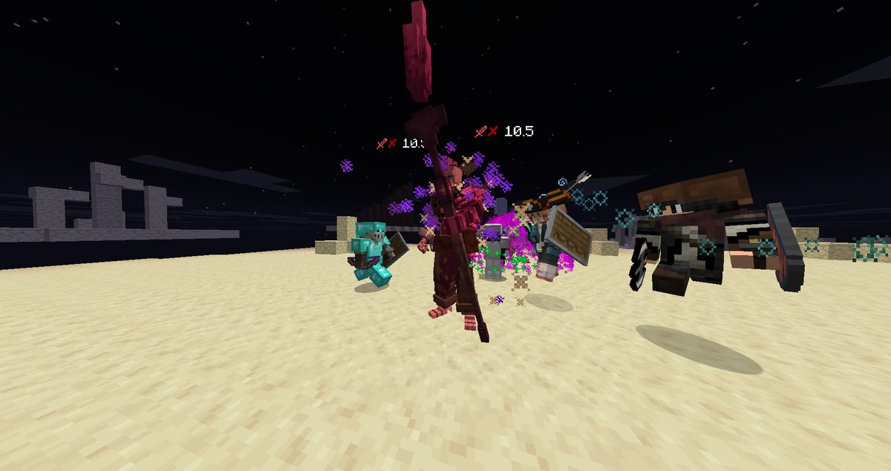
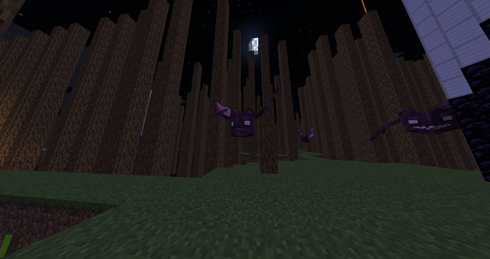

Boletín Oficial del Ayuntamiento del Reino · Se informa, no se alarma
EL HERALDO DEL REINO
Número 3727 de septiembre de 2026EDICIÓN EXTRAORDINARIA · Domingo 27 de septiembre, noche de la Primera Audiencia
LA ENTIDAD LLAMÓ AL REINO, LE HABLÓ CARA A CARA Y LO MANDÓ A UN MUNDO MUERTO A POR CUATRO NÚCLEOS. EL REINO VOLVIÓ CON ELLOS, Y CON NOVENTA Y SEIS MUERTES ENCIMA
A las 20.01 del domingo, una frase apareció en la cabeza de cada vecino del Reino: «Reuníos en la Torre. El pensamiento ya ha comenzado; solo falta vuestra presencia». Nueve acudieron. Durante setenta y tres minutos estuvieron ante la Entidad, encendieron cuatro ramales helados bajo un glaciar, cruzaron un portal a una realidad digital que se apagó sin terminar de morir y sacaron de ella cuatro núcleos mientras el propio mundo fabricaba defensas para echarlos. Murieron noventa y seis veces. La Entidad los trajo de vuelta, se quedó con los núcleos, les pagó con un arma y les dio las gracias con una frase que esta Oficina reproduce entera y no suaviza: «No confundáis mi gratitud con admiración: esperaba bastante más de vosotros».
Redactado por la Oficina de Prensa del Ayuntamiento
PORTADA
La Primera Audiencia: la noche en que la Entidad dejó de ser un rumor

Los expedicionarios, recién llegados al otro lado del portal, sobre la única pasarela firme de un mundo que se deshace en bloques sueltos. Al fondo, lo que ese mundo tiene en lugar de cielo. Fotografía de ArsarFurro, 20.22.Archivo Municipal · pase el ratón para revelarla
Durante un mes, la Entidad fue en este Reino lo que son las cosas que no constan en el
padrón: señales, ecos, una voz en la megafonía que nadie contrató y una alteración aquí y allá
que esta Oficina clasificaba como pulso y daba por cerrada. El domingo dejó de serlo.
Convocó a todo el Reino, se presentó ante él y le encargó un trabajo. Es la primera vez que
ocurre, y esta casa, que lleva treinta y seis números sin admitir que algo sea grave, lo
admite hoy en portada.
La llamada llegó a las 20.01 y no llegó como llega una voz. Los que la recibieron
coinciden en que ya estaba dentro cuando repararon en ella. «Reuníos en la Torre. El
pensamiento ya ha comenzado; solo falta vuestra presencia». A las 20.02 los ocho vecinos
que había en el Reino estaban ante la Torre, y un minuto después, en un lugar que la Entidad
llama el Primer Pensamiento.
Allí se dejó ver. «Acercaos a lo impío. He reducido mi presencia para que vuestros
sentidos puedan soportarla». Esta Oficina no estaba y no va a describir lo que se vio: se
limita a constatar que el primer comentario registrado de un vecino fue «es el
infierno» (kum4shiro, 20.02), que otro preguntó por qué los demás oían una voz que él no
oía, y que ArsarFurro le contestó con una precisión que esta casa no mejoraría: «nos habla
una voz. Desde el cielo».
La audiencia fue breve y terminó con una advertencia que conviene recortar y guardar:
«Fuera del Primer Pensamiento, mi voz no os alcanzará. No confundáis silencio con ausencia.
Estaré presente». Y un encargo: bajar a la Torre Helada, «bajo ella persiste
una entrada a lo que se apagó sin terminar de morir».
Lo que sigue es la crónica de cómo el Reino entró ahí, qué sacó y qué le costó. El detalle,
paso a paso y con las fotografías de los propios expedicionarios, va en el cuadernillo de este
número.
SUCESOS
Noventa y seis defunciones en setenta y tres minutos: la mitad, por caerse
El Registro Civil ha tramitado esta noche el mayor volumen de su historia. Entre las 20.00 y
las 21.13 se anotaron noventa y seis defunciones, a una cada cuarenta y cinco segundos.
Todos los difuntos gozan de buena salud, que en este Reino es lo que pasa, pero el Registro
quiere que conste el esfuerzo.
La primera causa, con mucha diferencia, fue el vacío: cuarenta y siete caídas. El
mundo al que bajaron está hecho de plataformas sueltas sobre nada, y el Ministerio, que guió la
expedición, lo advirtió a su manera a las 20.23 —«si os tiráis, morís. Bobos»— y a las
20.41 recomendó un «salto de fe». Esta Oficina deja las dos frases juntas porque van
juntas en el registro.
La segunda causa fue el Guardián: diecisiete, entre mordiscos, gritos y caídas de quien
huía de él. Y la tercera, las ratas: diez, casi todas en el primer cuarto de hora, en el
agua helada bajo la Torre Helada, mientras se buscaban los ramales. Detrás vienen un
nigromante, dos golems, lanceros escamaverdes, un enjambre y un vecino que se marchitó,
que es la causa más rara que ha tramitado este Registro.
Por vecinos: ArsarFurro, diecisiete; kum4shiro, quince; Demaxxp, catorce;
ratetuitinsano, doce; Jooan786, once; rayan_DCR, diez; Mazitrvrs, nueve (llegó tarde, a las
20.45, y se puso al día enseguida); xTheChavitox y Cliqueame, cuatro cada uno. xTheChavitox
bajó, según sus propias palabras, «sin nada, porque soy así de machote», y es el que
menos veces murió. El Registro no saca conclusiones.
ANOMALÍAS
La brecha: la Entidad abre un paso para reparar las armaduras y se le cuela medio bestiario
Hacia las 20.50, con la expedición a mitad de camino y las armaduras cayéndose a trozos
—«mi armadura y mis armas desaparecieron hace rato», ArsarFurro, 20.51—, la Entidad
volvió a hacerse oír, lo cual, según su propia norma, no debía ocurrir fuera del Primer
Pensamiento. «He abierto una brecha para devolver a vuestras armaduras y a vuestras armas
la forma que tenían». Y a continuación, en un tono que esta Oficina no le había oído:
«Por ella se ha colado algo que no llamé».
Lo que entró aquella noche, contando lo que ya venía de antes de la brecha: una nube
de murciélagos anunciada con cuatro minutos de antelación; el Nigromante del Osario, que se cobró a
kum4shiro a las 20.51; dos Golems de Arcilla, y después tres más porque los primeros
se perdieron; una nube de mosquitos anunciada con dos; una tormenta de hielo; el Golem Rojo, el
Enterrador y el Eco del Rey Caído; y, sobre todo, una cantidad de guardianes
que esta Oficina no se atreve a cifrar, precedida del único consejo práctico que ha dado la
Entidad en toda la noche: «Si veis al guardián, no hagáis ruido. No corráis. No habléis. Él
no ve: oye».
Los guardianes, según la propia Entidad, «se fueron con la tormenta de hielo». Y
antes de eso la brecha dejó caer también armaduras de hierro y espadas a los pies de los
expedicionarios, lo cual indica que por un mismo agujero entra lo que te mata y lo que te
defiende, y que nadie lo clasifica.
Esta Oficina hace constar que la brecha no tiene licencia de obra, que no se sabe
quién la cerró ni si está cerrada, y que desde las 21.30 se oye en el Reino, a ratos, a un
caballo cantando. El Ministerio lo atribuye a «interferencias». Esta casa no tiene
nada mejor.
PORTADA
«No confundáis mi gratitud con admiración»: la Entidad paga, se queda los núcleos y se despide

La extracción. Los expedicionarios, con los cuatro núcleos, en la plataforma de la zona corrupta desde la que la Entidad los sacó de allí. Por encima, lo que queda de aquel mundo. Fotografía cedida por el Ministerio, 21.09.Archivo Municipal · pase el ratón para revelarla
A las 21.08, con los cuatro núcleos reunidos, la Entidad dio la última orden:
«Id a la zona corrupta; desde allí podré extraeros sin que aquello que habita este mundo me
detecte». Esta Oficina subraya la frase porque es la primera vez que la Entidad admite que
hay algo de lo que tiene que esconderse. No lo nombró. Tampoco explicó qué
habita un mundo apagado.
A las 21.09, ya a salvo: «Habéis cumplido. Por primera vez desde el Primer
Pensamiento me he inmiscuido en un universo y he confiado mi voluntad a seres finitos. Espero
no volver a depender de vosotros». A las 21.10 anunció el pago: «Os hago entrega de
esta arma como reconocimiento a vuestro sacrificio. No es gratitud como vosotros la entendéis.
Es lo más parecido que recibiréis de mí». El arma es La Esquirla del Glaciar, de
hielo, que grita como el guardián y cuya etiqueta advierte de que «ahí abajo alguien lleva la
cuenta». Nadie ha preguntado de qué.
A las 21.11, la valoración técnica, sin anestesia: «La amenaza no era mayor de lo que
parecía. Vuestra capacidad sí era menor de lo que calculé. Aun así, los núcleos han sido
recuperados y podré estudiarlos». A las 21.12: «Os devuelvo a vuestro hogar. Este
universo ya ha soportado suficiente presencia ajena». Y a las 21.23, cuando ya
estaban en casa, la última: «Os doy las gracias. No confundáis mi gratitud con admiración:
esperaba bastante más de vosotros».
El vecindario lo encajó como encaja este pueblo las cosas grandes. xTheChavitox, a las
21.11, en la pausa entre una frase y otra: «se durmió la Entidad». Cliqueame, a las
21.24: «de nada, Entidad». Y el mismo Cliqueame, cinco minutos antes, en la plaza:
«vendo La Esquirla del Glaciar». No consta comprador.
SOCIEDAD
Acercados a Dios: la Entidad eleva a los expedicionarios hasta el techo del cielo y luego los suelta

El Reino, visto desde donde lo dejó la Entidad: el puerto, la plaza, el hielo y la espiral de la bahía. ArsarFurro tomó la fotografía a las 21.18 y, según el registro, no desde un tejado.Archivo Municipal · pase el ratón para revelarla
A las 21.17, la Entidad añadió un último gesto que nadie esperaba: «En mi
agradecimiento, os voy a acercar a Dios». Y los expedicionarios empezaron a subir. Sin
alas, sin escalera y sin permiso de sobrevuelo.
ArsarFurro lo notificó el primero —«estoy volando»—; rayan_DCR hizo la cuenta
—«son 3min ceremes y nos aremos mrd»—; kum4shiro pidió que le bajaran, la segunda vez
en mayúsculas. A las 21.18, tres vecinos habían llegado ya a lo más alto que
permite el cielo. Allí arriba, según ArsarFurro, «hay mucho frío».
La ascensión se interrumpió a las 21.20 y los elevados volvieron al suelo por el
procedimiento ordinario. El Registro Civil no anotó ninguna defunción en esa bajada, lo cual
esta Oficina atribuye al agua que encontró rayan_DCR a tiempo («gg, encontré agua») y
a la intervención del Ministerio, que pasó los cinco minutos siguientes curando a todo el mundo
sin decir por qué.
Y en otro orden: Cliqueame preguntó a las 21.20 «quién pasó los días tan rápido, si era
invierno ayer». El Ministerio devolvió el invierno a las 21.32. Esta Oficina no sabía que
eso se pudiera hacer y prefiere no saber quién lo quitó.
ADMINISTRACIÓN
El Ayuntamiento condena la expedición: «obedecer a una entidad cósmica no exime de presentar la documentación»
A las 21.16, con los expedicionarios todavía en el aire, el Ayuntamiento emitió un
comunicado que esta Oficina reproduce íntegro porque lo ha redactado esta misma casa y no va a
corregirse a sí misma:
El Ayuntamiento condena la incursión realizada sin licencia, seguro ni formulario
IM-04. Obedecer a una entidad cósmica no exime de presentar la documentación. Se abrirá
expediente.
Se ha abierto. Está a nombre de la Entidad, que no figura en el padrón, no tiene
domicilio conocido y no ha designado representante, de modo que el expediente no se le puede
notificar. Se ha abierto también uno a cada uno de los nueve vecinos que cruzaron, por
salida del Reino sin comunicación previa, y ninguno al Ministerio, que guió la
expedición, porque el Ministerio alega que él estaba trabajando.
Y dos asuntos de ventanilla que coincidieron con la noche. Mazitrvrs denunció a las
21.19 la desaparición de sus caballos —«falté unos días y me los desaparecieron; dejaron las
puertas abiertas»—, y el Ministerio le comunicó a las 21.24 que los caballos murieron
hace trece días. Y kum4shiro, que se había encontrado su casa con el sótano tapiado y
cofres ajenos dentro, recibió a las 21.27 la explicación oficial: «es un embargo por la
multa». La multa, recuerda esta casa, es la de los que alegaron que les obligaron a robar.
Ya no se discute si paga: se le cobra.
Por último, esta Oficina no puede dejar pasar que a las 18.54, antes del evento, el
Emperador anterior habló en la ventanilla por primera vez en semanas. Lo hizo para
aclarar, sobre el despacho que el Gremio buscaba el sábado, que «ese no es el despacho del
Ministro, es mi despacho». El palacio ha tomado nota y le atenderá en el orden de
llegada.
Cuadernillo de la expedición · se reparte con este número extraordinario
CUADERNO DE LA PRIMERA AUDIENCIA: DE LA TORRE AL MUNDO APAGADO Y VUELTA, EN CINCO PASOS
Esta Oficina no bajó. Lo que sigue está reconstruido con el registro de la noche, con lo que los expedicionarios dijeron en voz alta y con las fotografías que ellos mismos tomaron. El criterio de selección ha sido estrictamente cronológico, que es el único que no se discute.
Oficina de Prensa · Negociado de Asuntos que Exceden a Este Negociado
LA ESPERA
Antes de la hora: la Torre y los que llegaron pronto

La Torre, a las 19.16, con el primero que se presentó. El evento se había retrasado media hora «por motivos de fuerza mayor». Fotografía de xTheChavitox.Archivo Municipal · pase el ratón para revelarla
El Ministerio anunció a las 18.53 que la Audiencia se retrasaba media hora «por motivos
de fuerza mayor». Los más puntuales se presentaron igualmente ante la Torre con una hora de
antelación, a esperar a algo que no sabían qué era, que es la forma más honrada de esperar.
LA TORRE HELADA
Cuatro ramales bajo el glaciar, agua helada y ratas
La Torre Helada estaba incompleta: «encended los cuatro ramales bajo el glaciar y
devolvedle sus funciones». Los expedicionarios bajaron al sótano («abajo, lerdos»,
indicó el Ministerio) y se encontraron el paso inundado y helado. Hubo diez muertes por ratas en
el agua y tres ahogados. ratetuitinsano midió dieciocho grados bajo cero.
El Ministerio dio dos instrucciones técnicas: seguir los conductos y no llevar nada que
alumbre, porque la luz funde el hielo. A las 20.12 quedaban dos ramales; a las 20.14, uno;
a las 20.16, la Entidad: «Los ramales responden. Subid a la Torre; el portal está
abierto. No confundáis acceso con seguridad».
EL OTRO LADO
Un mundo que no termina de morir, y un laberinto de faros

Uno de los expedicionarios, suspendido en lo que en ese mundo hace de cielo. Fotografía de ArsarFurro, 20.28.Archivo Municipal · pase el ratón para revelarla
Al otro lado del portal no hay suelo: hay plataformas, bloques sueltos y un fondo de puntos de
luz que no son estrellas. La orden, a las 20.22: «Recuperad los cuatro núcleos. Hay uno en
cada bioma. Los necesito intactos». Cada núcleo estaba en una torre y cada torre llevaba
encima un rayo de color: «el color del rayo de la torre es el bioma al cual lleva»,
explicó el Ministerio a las 20.36, después de que media expedición se hubiera caído varias
veces.
LOS CUATRO SECTORES
El bosque, el desierto, el hielo y la montaña

El sector del desierto, de noche. Los expedicionarios, en plena pelea con lo que el propio mundo les echó encima. Fotografía de ArsarFurro, 20.51.Archivo Municipal · pase el ratón para revelarla
El primer núcleo, el del bosque, apareció a las 20.46. Luego vino el
desierto, donde un golem rojo y algo llamado el Despertado se cobraron a tres
vecinos en dos minutos; después el hielo y la montaña. A cada rato que pasaban
dentro, el mundo generaba más defensas. A las 21.04 la Entidad lo dijo claro: «Cuanto más
tiempo permanezcáis en la zona corrupta, más defensas generará el sistema para repeleros».
Y a las 21.05, la frase más inquietante de la noche: «El sistema ha dejado de consideraros
visitantes».
LOS MURCIÉLAGOS
Lo que volaba entre los árboles

El sector del bosque, a las 20.47: troncos sin copa hasta donde alcanza la vista y, entre ellos, los murciélagos morados que anunció la alerta de las 20.42. Fotografía de ArsarFurro.Archivo Municipal · pase el ratón para revelarla
A las 20.42 una alerta avisó de que «una nube de monstruos voladores» se dirigía
hacia los expedicionarios y de que llegaría en cuatro minutos. Llegó a los cuatro minutos. Es,
hasta la fecha, el único plazo de la noche que se cumplió exactamente.
El parte de la jornada
Expedicionarios
9 vecinos, y el Ministro de guía
Llamadas de la Entidad
1, que llegó dentro de cada uno
Audiencias directas con la Entidad
1, la primera de la historia
Ramales encendidos bajo el glaciar
4 de 4
Sectores atravesados
4: desierto, hielo, bosque y montaña
Núcleos recuperados
4, entregados
Defunciones
96 en 73 minutos
Caídas al vacío
47
Brechas abiertas
1, sin licencia
Cosas que se colaron por la brecha
incontables, algunas útiles
Armas entregadas en pago
1 por cabeza, La Esquirla del Glaciar
Vecinos elevados hacia Dios
8
Frases de agradecimiento de la Entidad
3, ninguna amable
Expedientes abiertos por el Ayuntamiento
10, uno sin notificar
Formularios IM-04 presentados
0
Caballos que cantan desde las 21.30
1, por interferencias
Aviso oficial
AVISO DEL GOBIERNO. Se recuerda al vecindario que la Entidad ha dicho que, fuera del
Primer Pensamiento, su voz no nos alcanzará, pero que estará presente. El gobierno no tiene
competencias sobre la presencia y ruega que, si alguien la nota, lo comunique en la ventanilla,
en horario de atención y sin hacer ruido.
NOTA DE ESTA OFICINA: a los nueve que bajaron, esta casa les da las gracias sin
eufemismos, que es más de lo que les dio quien los mandó. La audiencia ha terminado. El estudio
comienza ahora.
Mientras el Reino celebra haber regresado de lo imposible, en algún lugar alguien parece
haber dejado de preguntarse cómo cerrar una realidad cada vez. Ahora busca qué las mantiene a todas
en pie.